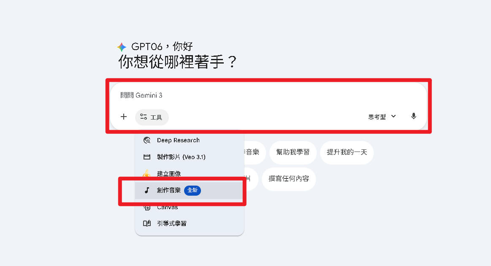
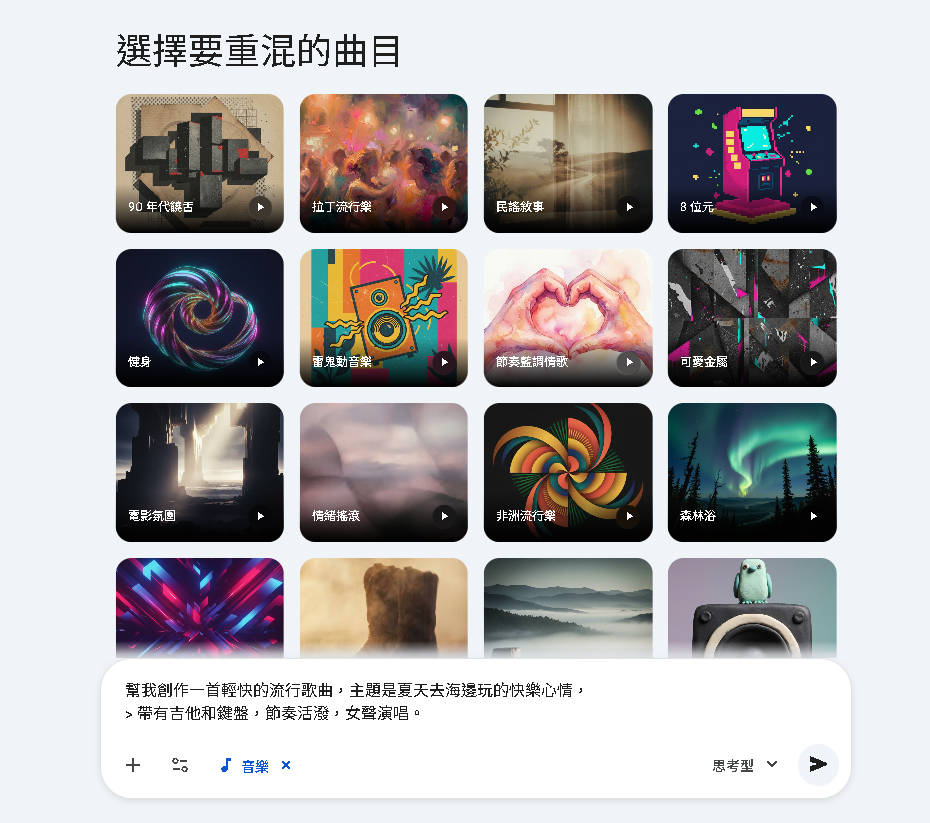
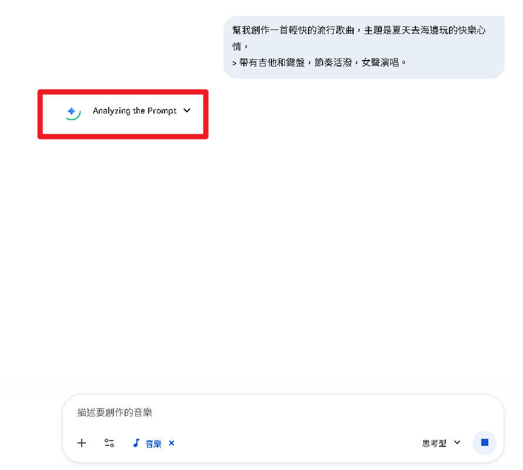
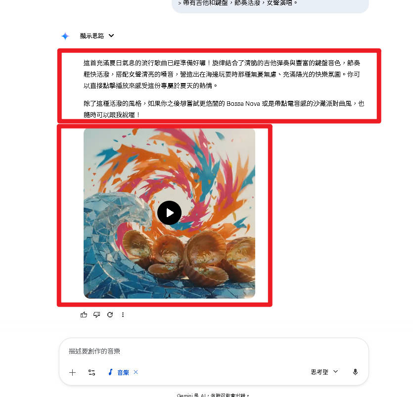

Part 2 Text to Music
文字生成音樂
最直覺的方式——用文字告訴 Gemini 你想要什麼音樂
自然語言
30秒音樂
即時生成
5 步驟完成
對話式調整
1 進入 Gemini 對話介面
打開 gemini.google.com，登入 Google 帳號後，你會看到 Gemini 的聊天介面。音樂生成不需要額外的設定或開關——直接在聊天框中輸入音樂需求即可。
操作重點
- 確認已登入 Google 帳號
- 找到頁面底部的文字輸入框
- 不需要切換任何模式，直接在對話中描述你的音樂需求
- Gemini 會自動判斷你想要生成音樂
💡 小技巧：開始新對話時效果最佳，避免在已有大量對話的視窗中生成音樂。

2 輸入音樂提示詞
在輸入框中，用自然語言描述你想要的音樂。描述越具體，生成結果越符合預期。
範例提示詞（中文）
幫我創作一首輕快的流行歌曲，主題是夏天去海邊玩的快樂心情，帶有吉他和鍵盤，節奏活潑，女聲演唱。
你可以指定的元素
| 元素 | 說明 | 範例 |
|---|---|---|
| 音樂風格 | 想要什麼類型？ | 流行、爵士、古典、電子 |
| 情緒氛圍 | 想表達什麼感覺？ | 歡樂、憂傷、激昂、平靜 |
| 樂器 | 用什麼樂器？ | 鋼琴、吉他、鼓組、弦樂 |
| 人聲 | 需要歌手演唱嗎？ | 男聲、女聲、合唱、純器樂 |
| 節奏速度 | 快還是慢？ | 慢板、中板、快板、120 BPM |

語言支援注意事項
Gemini 音樂生成目前官方支援 8 種語言，了解語言限制有助於獲得更好的生成效果：
English
英文
Japanese
日文
Korean
韓文
German
德文
Spanish
西班牙文
French
法文
Hindi
印地文
Portuguese
葡萄牙文
⚠️ 中文可以用，但英文效果更佳！
Gemini 能理解中文指令並生成音樂，但官方支援列表暫不含中文。如果生成效果不理想，建議將關鍵的音樂描述改用英文。
Gemini 能理解中文指令並生成音樂，但官方支援列表暫不含中文。如果生成效果不理想，建議將關鍵的音樂描述改用英文。
✅ 建議做法：先用中文描述需求讓 Gemini 理解你的意圖，如果結果不滿意，再改用英文重新提示。也可以用後續教學中介紹的「音樂 Gem」來幫你翻譯和優化提示詞。
3 等待 AI 生成
按下送出後，Gemini 會開始生成音樂。這個過程通常需要等待 10 ~ 30 秒。
生成過程中會發生什麼？
- Gemini 分析你的提示詞，理解情緒、風格和樂器需求
- Lyria 3 模型開始創作旋律、和弦進行與節奏架構
- 如果指定人聲，AI 會自動創作歌詞並生成演唱
- 同步生成封面藝術圖片
- 最終混音並輸出 30 秒的完整音樂
💡 等待時間取決於：目前的伺服器負載、你的訂閱方案（付費用戶有較高優先權）、以及提示詞的複雜程度。

4 試聽與下載
生成完成後，你會看到一個完整的音樂播放介面：
▶️ 播放按鈕
直接在頁面上試聽 30 秒的完整音樂。
💾 下載按鈕
將音樂儲存到本機電腦，方便後續使用。
🎨 AI 封面藝術
由 Nano Banana 技術自動生成的專屬封面圖片。
🔗 分享連結
產生分享連結，可以直接傳給朋友一起聆聽。
✅ 下載的音樂檔案可直接用於影片剪輯、Podcast、簡報等各種用途。所有檔案都會內嵌 SynthID 數位浮水印。

5 不滿意？追加修改！
這是 Gemini 音樂生成的一大優勢——對話式追加修改。不需要重新開始，直接在同一個對話中提出調整需求。
你可以這樣追加修改
| 修改類型 | 範例指令 |
|---|---|
| 調整速度 | 節奏再快一點 |
| 更換樂器 | 加入一段薩克斯風獨奏 |
| 改變情緒 | 讓整體感覺更歡樂一些 |
| 加入/移除人聲 | 改成純器樂版本，不要人聲 |
| 調整風格 | 風格偏向爵士一點 |
範例追加指令
節奏再快一點，加入一段薩克斯風獨奏

⚠️ 注意：每次追加修改都會重新生成一段全新的 30 秒音樂，不是在原有音樂上修改。建議先把滿意的版本下載保存。
提示詞範例（上）
以下是精心設計的音樂提示詞範例，可以直接複製貼上到 Gemini 使用：
🎶
範例 A — 輕鬆背景音樂
適合讀書、工作、咖啡廳氛圍
Create a chill lo-fi hip hop track with soft piano and vinyl crackle, perfect for studying
🏋️
範例 B — 激昂運動音樂
健身、跑步的高能量歌單
Make an energetic EDM track with heavy bass drops and a fast tempo around 140 BPM for workout
💕
範例 C — 抒情情歌
溫柔深情的男聲演唱情歌
Compose a slow romantic ballad with acoustic guitar, soft male vocals singing about missing someone
💡 提示：英文提示詞的效果通常優於中文。描述越具體（包含情緒、樂器、速度），生成結果越精準。
提示詞範例（下）
更多不同情境的提示詞範例：
🎈
範例 D — 兒童歡樂曲
適合小朋友的歡快旋律，活潑可愛
A playful and fun children's song with ukulele and hand claps, about animals in the zoo
🎬
範例 E — 電影配樂風
史詩感管弦樂章，氣勢磅礡
An epic cinematic orchestral piece with strings and brass, building tension then resolving triumphantly
寫出好提示詞的關鍵要素
| 要素 | 說明 | 範例片段 |
|---|---|---|
| 風格 (Style) | 明確指定音樂類型 | lo-fi hip hop, EDM, ballad |
| 情緒 (Mood) | 描述想要的感覺 | chill, energetic, romantic |
| 樂器 (Instrument) | 列出主要樂器 | piano, guitar, strings |
| 速度 (Tempo) | 指定 BPM 或快慢 | 120 BPM, slow, fast |
| 用途 (Purpose) | 說明使用場景 | for studying, for workout |
文字生成音樂 — 流程總結
回顧完整的 5 步驟流程，從輸入到下載只需要不到 1 分鐘：
💻
Step 1
進入 Gemini
對話介面
✍️
Step 2
輸入音樂
提示詞
⏳
Step 3
等待 AI 生成
10~30 秒
🎧
Step 4
試聽、下載
分享音樂
🔁
Step 5
追加修改
持續優化
✅ 重點回顧：
- 提示詞越具體，生成效果越好（建議使用英文描述關鍵元素）
- 每次生成 30 秒完整音樂（含旋律、編曲、人聲）
- 不滿意可直接對話追加修改，不需要重新開始
- 所有生成的音樂都帶有 SynthID 數位浮水印
💡 下一步：接下來的 Part 3 將介紹更神奇的功能——上傳一張照片，讓 AI 自動「看圖作曲」！